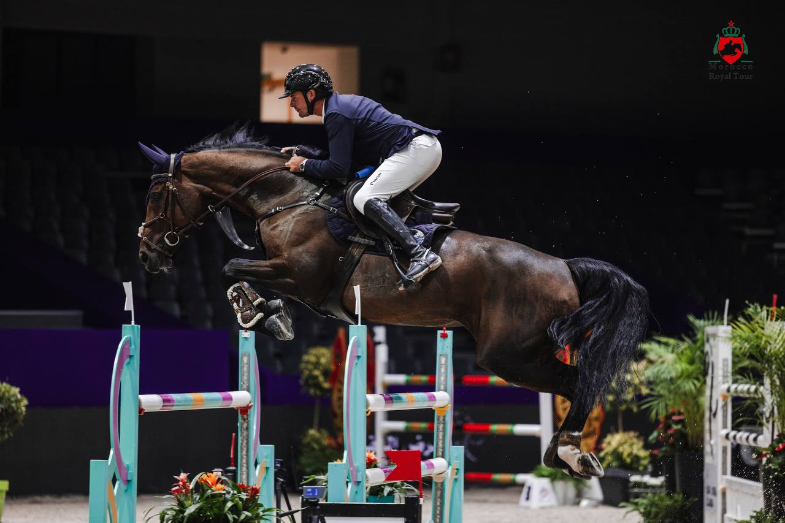

El Morocco Royal Tour estrena su primer CSI5* en El Jadida con triunfo de Alsharbatly
La tercera y última etapa del circuito marroquí arrancó el jueves con victorias del saudí Abdullah Alsharbatly en la 1,50 m cinco estrellas y del marroquí Farid Amanzar en la prueba inaugural del CSI2*.

El Centro de Exposiciones Mohammed VI de El Jadida abrió el jueves 15 de octubre la última semana del Morocco Royal Tour, que por primera vez en sus quince años de historia incluye un concurso de categoría cinco estrellas. La cita, que se celebra junto al Salon du Cheval, combina pruebas CSI2* y CSI5* y culmina el domingo con el Gran Premio de la Copa del Mundo de Su Majestad el Rey Mohammed VI.
La primera victoria de nivel cinco estrellas fue para Arabia Saudí. En la CSI5* de 1,50 m – Prix SGLN, Abdullah Alsharbatly se impuso con Atome des Etisses, por delante del belga Mike van Olst con Comme Elle Faut Odth Z y del alemán Tom Schewe con Katrien.
Antes, la prueba que abrió la semana, la CSI2* de 1,25 m – Prix Barid Al Maghrib, se quedó en casa: el marroquí Farid Amanzar ganó con Upper Class TT. Bélgica completó el podio con Virginie Thonon a lomos de Just The Way y Jean-Christophe De Grande con Sadel de Boulard.
El Jadida llega después del CSI4* de Tetuán y del CSIO4*-W de Rabat, y reúne en la pista de Dar Es Salam a buena parte de los protagonistas de las dos semanas anteriores. Francia presenta al completo el equipo que ganó la Copa de Naciones de Rabat, formado por Cyril Bouvard, Olivier Perreau, Alix Ragot y Jeanne Sadran, al que se suman Arthur Le Vot, Charles Henri Ferme, Antoine Ermann y Simon Delestre.
Marruecos, segundo en esa Copa de Naciones, repite también con su equipo nacional: Abdelkebir Ouaddar, Ali Al Ahrach, Abdeslam Bennani Smires y El Ghali Boukaa. Majid Djaidi, Saad Jabri y Yassine Laklach completan la representación local en el CSI5*-W.
Por Bélgica compiten, entre otros, Jérôme Guéry, subcampeón del mundo en 2022, y el propio De Grande. Brasil cuenta con Yuri Mansur, ganador la semana pasada de la Winning Round del CSIO4*-W de Rabat, y con Luiz Felipe Neto De Azevedo y su padre, Luiz Felipe Cortizo Gonçalves de Azevedo Filho.
El suizo Anthony Bourquard, vencedor del Gran Premio de Tetuán, busca sumar El Jadida a su recorrido por el circuito, acompañado por sus compatriotas Edouard Schmitz y Alexandra Amar. También figuran en la salida la griega Ioli Mytilineou, segunda en el Gran Premio de Tetuán, Inigo Lopez de la Osa Franco por Mónaco, el italiano Emanuele Camili y el colombiano Santiago Diaz Ortega, que dejó buenas sensaciones en Rabat.
Alemania, Gran Bretaña, Países Bajos, Portugal, Arabia Saudí, Ucrania, España e Irlanda completan la lista de países con representación.
Programa y resultados oficiales
Por Lucía Valdeolmos